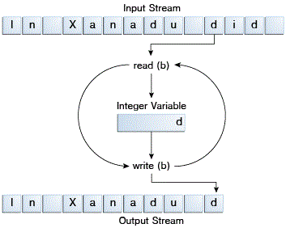

Los programas usan flujos de bytes para realizar entrada y salida de bytes de 8 bits. Todas las clases
de flujos de bytes son descendientes de
InputStream y
OutputStream.
Hay muchas clases de flujos de bytes. Para demostrar cómo los flujos de byte funcionan, nos fijaremos en los
flujos de bytes de ficheros de E/S,
FileInputStream y
FileOutputStream. Otras clases de flujos de byte son usados en su mayoría de la misma
forma; sólo difieren principalmente en la forma en que son construidos.
Exploraremos FileInputStream y FileOutputStream examinando un programa de ejemplo
llamado
CopiaBytes
, que usa flujos de byte para copiar xanadu.txt, un byte a la vez.
import java.io.FileInputStream;
import java.io.FileOutputStream;
import java.io.IOException;
// fuente original: CopyBytes.java
public class CopiaBytes {
public static void main(String[] args) throws IOException {
FileInputStream in = null;
FileOutputStream out = null;
try {
in = new FileInputStream("xanadu.txt");
out = new FileOutputStream("fueradenuevo.txt");
int c;
while ((c = in.read()) != -1) {
out.write(c);
}
} finally {
if (in != null) {
in.close();
}
if (out != null) {
out.close();
}
}
}
}
CopiaBytes gasta la mayoría de su tiempo en un bucle simple que lee el flujo de entrada y escribe
en el flujo de salida, un byte cada vez, como se muestra en
la siguiente figura.

Entrada y salida simple de Flujo de bytes.
Cerrar un flujo cuando ya no es necesario es muy importante — tan importante que CopiaBytes
usa un bloque finally para garantizar que ambos flujos sean cerrados incluso si ocurre un error.
Esta práctica ayuda a evitar fugas serias de recursos.
Un error posible es que CopiaBytes fuera incapaz de abrir uno o ambos ficheros. Cuando eso pasa, la
variable de flujo correspondiente al fihcero nunca cambia de su valor inicial null. Eso es
porque CopiaBytes se asegura de que cada variable de flujo contenga una referencia al objeto antes
de invocar close.
CopiaBytes parece un programa normal, pero en realidad representa una clase de E/S de bajo-nivel
que debería evitar. Ya que xanadu.txt contiene datos en forma de caracteres, el mejor enfoque es
usar flujos de caracteres, como están descritos en la siguiente sección. Hay
también flujos para tipos de datos más complicados. Los flujos de bytes sólo deberían ser usados para la E/S
más primitiva.
Así que, ¿porqué hablar sobre flujos de bytes? Porque todos los tipos de flujos están construidos sobre flujos de bytes.